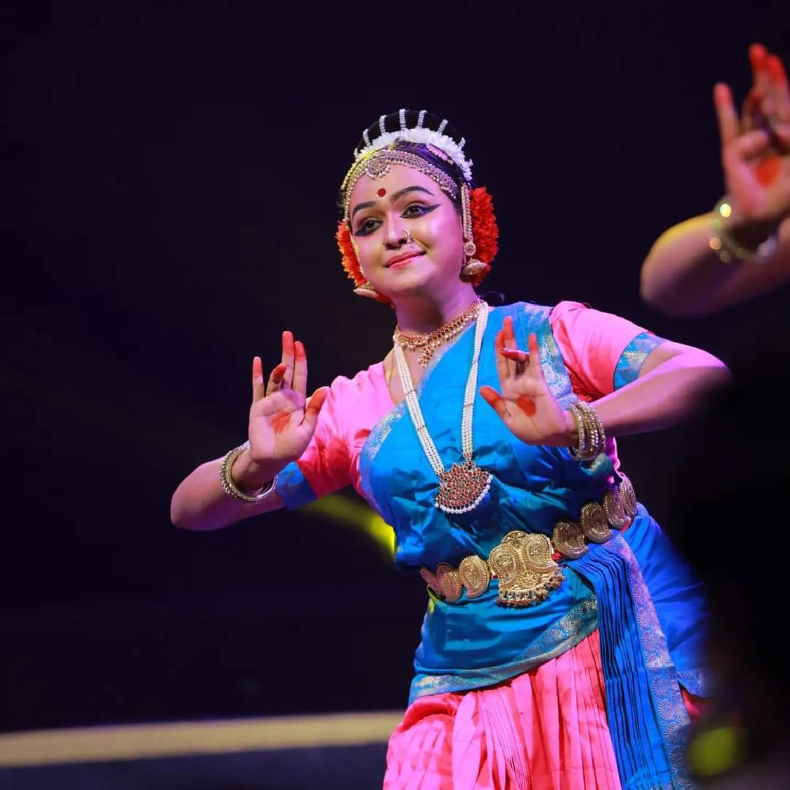

29 Years
Dance learning and dedicated artistic practice.
Artist. Educator. Lifelong Learner.
An Ayurvedic physician and Indian classical dancer whose artistic journey reflects years of dedicated learning, practice and performance.
Doordarshan B-Grade Artist in Bharatanatyam & Mohiniyattam
Enquire About Classes ↗

Dr. Devi Manjula is an Ayurvedic physician and an Indian classical dancer with a longstanding journey of dance learning and artistic practice. She completed her Master of Fine Arts (MFA) in Bharatanatyam from Annamalai University in 2022.
Her training spans Bharatanatyam, Kuchipudi and Mohiniyattam. Her teaching emphasises strong fundamentals, disciplined practice, precision, grace and expressive understanding.
Her artistic journey includes performances, participation in theatrical productions associated with Kavalam Narayana Panicker and work as a dubbing artist in Malayalam films. She has also served as a judge at arts competitions.
Dance learning and dedicated artistic practice.
Annamalai University · 2022.
Recognised in Bharatanatyam and Mohiniyattam.
Recipient of a scholarship from the Centre for Cultural Resources and Training.
Recognition for artistic achievement at university zone level.
Best Actress at the State Arts Festival; experience in stage performance and arts judging.
Every artistic journey is shaped by the guidance and wisdom of teachers.

Regatta Natya Sangeetha Kendra

Darpana Nritha Vidyalaya
To help learners develop a strong foundation, refined technique, graceful movement and expressive understanding while respecting the traditions of Indian classical dance.